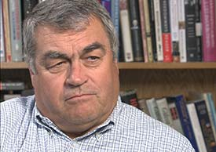
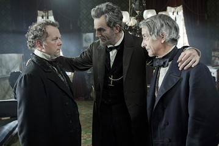
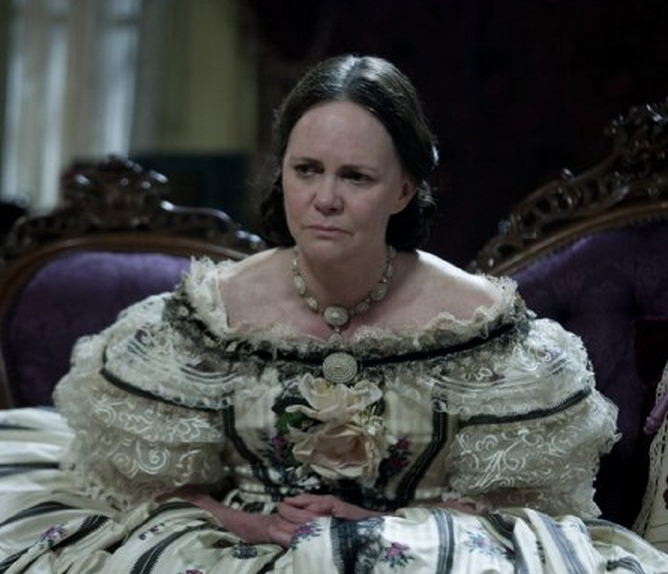

|
If you haven't seen Steven Spielberg's latest movie, Lincoln, my advice is: 1) See
it. 2) Arrange to have Ross Peterson sit next to you in the theater.
Peterson, who has been teaching U.S. history for more than 40 years, first at the
University of Texas and then at Utah State University (now semiretired), is a Lincoln
expert and fan. The shelves in his office include a bust of Lincoln, Carl Sandburg's
10-volume Lincoln biography, and seemingly every other book written about the man. He once
led a tour of the Land of Lincoln.
"I've always been intrigued by how America could produce such a guy with almost no
|

Historian Ross Peterson
|
background in leadership and thrust that upon him and have him rise to the occasion the
way he did," Peterson says.
What did he think of the movie?
"In all honesty, I enjoyed it," he said. "I thought people would understand it better
if they had know a lot of the history. They did an amazing job of casting people, creating
sets and putting characters in the roles. I noticed that none of the men had washed hair,
for instance. That would have been typical of the day. They were a pretty scruffy bunch,
not as primped as Washington and Adams."
Whether or not you've seen the movie yet, Peterson's observations about the film, which
follow, will enhance the experience.
Some people will be upset that the movie portrays Lincoln as perfectly willing to buy
votes with political favors to pass the 13th Amendment to abolish slavery. "That was
Lincoln to a T," Peterson says. "They paid what we would now call lobbyists to offer
favors to get those votes." Lincoln believed the end justified the means. He even fudged
the truth when necessary, such as saying the Southern peacekeepers were not in Washington
or Virginia, which was only technically true--they were just outside those boundaries,
waiting in a harbor.
If you question the accuracy of some of the dialogue or what went on behind closed
doors, it is noteworthy that John Hay and John Nicolay--the president's private
secretaries, both portrayed in the movie--took notes of everything. Peterson thought the
film should have shown them recording the meetings.
There's a reason that William H. Seward--Lincoln's secretary of state, played by David
Strathairn--disappears at the end of the film. The plot to kill Lincoln also included
simultaneous, but failed, attempts on the life of Seward and Vice President Andrew Johnson
|

David Costabile as James Ashley, Daniel Day-Lewis as Abraham Lincoln,
and David Strathairn as William H. Seward.
|
by John Wilkes Booth's co-conspirators. Recovering from injuries suffered in an accident,
Seward was at home, resting in bed when assassin Lewis Powell showed up to kill him.
Powell's gun misfired, and he had to fight his way past Seward's children and guards to
leap on the bed and stab Seward in the face and neck repeatedly. Thinking he had killed
Seward, he fled and was later captured and executed. All five of the wounded, including
Seward, survived. All this was probably too much of a tangent to portray in the movie.
At one point in the film, Gen. Ulysses S. Grant tells Lincoln, "Sir, you look 10 years
older than you did a year ago." Peterson says, "That's accurate."
One of the early scenes shows soldiers, including a black man, recite sections of the
Gettysburg Address to the president. Peterson strongly doubts that happened. "I've never
read that," he says.
There are two other scenes that Peterson says probably didn't happen--mixing black and
white soldiers, and Lincoln riding past dead soldiers strewn on the battlefield at
Petersburg. "They were very quick to bury those bodies because of disease," he says. "Even
a day later, they would exchange bodies. That's why there were few counterattacks. Lincoln
did go down there (to Petersburg), though. He always visited the hospitals. Almost daily
sometimes. Then he would have nightmares about it."
Mary Todd Lincoln, the President's grief-stricken wife, was later committed to an
institution by her son, Robert, who, by the way, is the only one of Lincoln's four
children who survived to adulthood.
Lincoln is frequently shown interrupting intense meetings to tell a slow, seemingly
irrelevant story, which were usually humorous and relevant. At one point, Edwin M.
Stanton, Lincoln's secretary of war, loses his temper and cries, "Not another story!" All
|

Sally Field as Mary Todd Lincoln
|
true, says Peterson. "Stanton would go crazy when Lincoln would tell his stories. They'd
be in the middle of a heavy discussion, and Lincoln would start telling a story. He was a
prolific storyteller. Sometimes people would see the point, sometime they wouldn't."
Stanton is also the one who says, from the side of Lincoln's deathbed, 'Now he belongs to
the ages.'"
Looking back on the life of Lincoln, Peterson says, "Every once in a while, historians
play the president-rating game and Lincoln is usually at the top with Washington and FDR.
Crisis creates greatness. From 1820 to 1860 every Congress had a major debate about
slavery. It was the great issue. He was able to solve it with 600,000 deaths. He also was
able to save the union. That was something that was easier to fight for. To do that,
ultimately, of course, it cost him his life. There is great similarity between him and
FDR. They die at the hour of their triumph and added a touch of martyrdom, especially
where Lincoln was assassinated.
"Lincoln took an oath to defend the United States. He never thought the way it was put
together that secession was a possibility. And the other thing is he had moved from being
just against slavery expansion to against slavery itself and wanting to make it a moral
crusade. He came to that view early in the war. That was in the best interest of the
country and he was willing to take people into battle to do it."
Source: Doug Robinson in the Deseret Morning News (November 26, 2012).
|